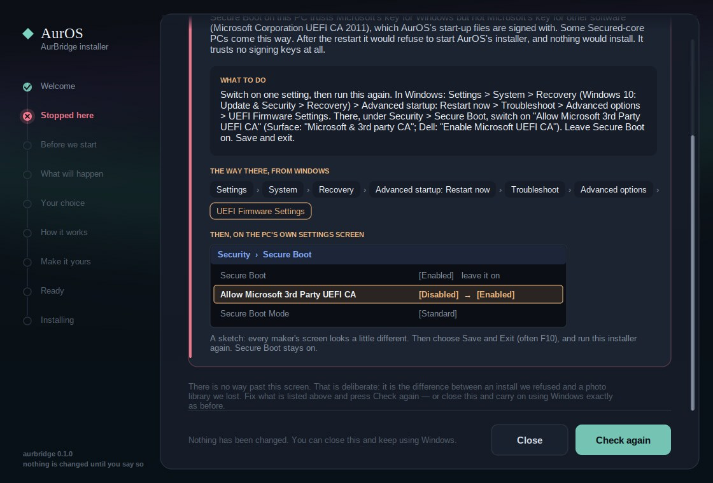

Will my PC make it?
What a web page can honestly tell about this PC.
A little, and nothing about its disk. Below is everything this browser will say, read on this page and sent nowhere, and then the things only the installer’s own Check this PC can see. That check only reads, and it changes nothing.
This browser says
Open this page on the PC you are thinking about. Browsers round some of these numbers, and some browsers say less than others.
AurOS has no published minimum for memory or processor yet. The project’s own example starts it in a virtual machine with 3 GB of memory.
Only the installer can see
These are what Check this PC reads. Where a program can fix something, its Fix these for me button does; where nothing can, it says so in one line and changes nothing.
| What | What the installer does | To look yourself, in Windows |
|---|---|---|
| Starts the modern way (UEFI) | Required. A PC that starts the old way (BIOS) is refused, and nothing on it is changed. Almost every PC from 2013 on is UEFI. | Start → type msinfo32 → “BIOS Mode” says UEFI. |
| About 50 GB free on C: | For the test build: AurOS needs 28 GB once installed, Windows keeps 8 GB, and the 5 GB copy of AurOS stays on C: while it installs. If there is too little, it empties the Recycle Bin, Windows’ temp folders and Disk Cleanup’s leftovers (not Downloads). | Settings → System → Storage. |
| A healthy drive | A failing drive is refused. Nothing can fix that, and the honest advice is to back it up today. | The installer reads this; Windows does not show it plainly. |
| Drive encryption (BitLocker) | Switches it off, then waits for Windows to finish. | Settings → Privacy & security → Device encryption, or Control Panel → BitLocker. |
| Fast Startup | Switches it off, always, as its first step. | Nothing to do. |
| Updates waiting for a restart | Restarts Windows once, and opens again by itself after you sign in. | Nothing to do. |
| Charger, battery, USB drives | Waits: plug the charger in, unplug USB drives, and the page carries on by itself. | Look at the PC. |
| Secure Boot | Leave it on; AurOS starts with it on. On the rare PC set to start only Windows (some Secured-core laptops), the installer stops and shows the one firmware setting to switch on. | msinfo32 → “Secure Boot State”. |
| Smart App Control | If it is on, Windows will not run an unsigned installer at all, and the test build is unsigned. Use a different PC. | Windows Security → App & browser control. |
| Several drives | Some multi-drive setups are refused, in one line. | File Explorer → This PC. |
The one firmware screen
The exception to “no firmware screens”, and it is rare.

The calendar
If this PC runs Windows 10 and is enrolled in Microsoft’s Extended Security Updates, that is when its free security updates stop. Regular support ended on 14 October 2025. The PC will work exactly as well the day after.